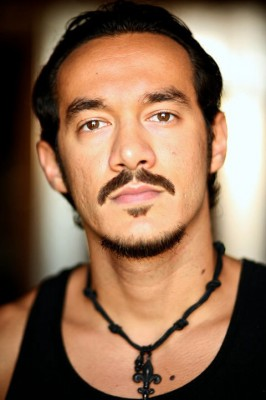

#5840 The Lucky One - Für immer der Deine
Alternativ: The Lucky One

 IMDB-Wertung: 6.5 / 10
IMDB-Wertung: 6.5 / 10  Metascore: 0
Metascore: 0 
Nur einem glücklichen Umstand glaubt U.S. Marine Sergeant Logan Thibault sein Leben zu verdanken, als er in seinem dritten Irakkriegseinsatz nur knapp einen Raketeneinschlag überlebt: dem Foto einer rätselhaften fremden jungen Frau, das er kurz zuvor auf dem Boden liegend gefunden hat. Sofort nach seiner Rückkehr in die USA begibt sich Logan auf die Suche nach der Frau hinter dem Foto, um ihr persönlich zu danken. Er findet heraus, dass sie Beth heißt und eine Hundezucht betreibt. Da er keinen weiteren Plan hat, nimmt Logan kurzerhand einen Job an, den Nana, die Oma von Beth’ Sohn, ihm anbietet. Ehe sich Logan versieht, verliebt er sich in Beth, und auch sie ist ihm nicht abgeneigt. Während Logan noch nach einem Weg sucht, ihr die Wahrheit über seine Identität mitzuteilen, kehrt der wahre Besitzer des Fotos, Beth’ Ehemannn, aus dem Krieg zurück…
Jahr: 2012
Dauer: 100 Minuten
FSK: 12
Land: USA Studio: Warner Bros.Tonspuren: DD5.1 - ,
Untertitel: Deutsch,
Auflösung: 1080p (1920x800) Größe: 7106 MB
Genre: Drama, Liebe
Regisseur: Scott Hicks
Drehbuch: Lewis Colick
Soundtrack:
Darsteller:
 Zac Efron als Logan
Zac Efron als Logan Taylor Schilling als Beth
Taylor Schilling als Beth Blythe Danner als Ellie
Blythe Danner als Ellie- Riley Thomas Stewart als Ben
- Jay R. Ferguson als Keith Clayton
 Adam LeFevre als Judge Clayton
Adam LeFevre als Judge Clayton- Robert Hayes als Victor
 Joe Chrest als Deputy Moore
Joe Chrest als Deputy Moore- Russell Durham Comegys als Roger Lyle
 Sharon Conley als Principal Miller
Sharon Conley als Principal Miller Ann McKenzie als Charlotte Clayton
Ann McKenzie als Charlotte Clayton- Cameron Banfield als Younger Marine
 Ritchie Montgomery als Cottage Owner
Ritchie Montgomery als Cottage Owner- Courtney James Clark als Logan's Sister
 Trey Burvant als Logan's Brother in Law
Trey Burvant als Logan's Brother in Law- Gavin Reyna als Logan's Nephew
- Matthew Michaud als Logan's Nephew
-  Ned Yousef als Iraqi Translator
- Jillian Batherson als Amanda
- Dorian Davis als Teasing Boy
- Cole Jackson als Teasing Boy
 Douglas M. Griffin als Bartender
Douglas M. Griffin als Bartender- Kendal Tuttle als Aces
- Dustin Bergene als Pastor
- Naim Alherimi als Cursing Old Man
- Donna Heckel-Reno als Dog Owner
- Hunter Reno als Dog Owner's Son
- Amanda Fetters als Grace
- Calvin Quatroy als Hamden Fisherman
- Marcie Antony Courtney als Choir Member
- Michael A. Cowan als Choir Member
- Deborah Denise Graves als Choir Member
- Gary Harris als Choir Member
- Melba Marie Harris als Choir Member
- Consuella Johnson Lumas als Choir Member
- Tina Marie Lumas als Choir Member
- Gregory J. Probst als Choir Member
- Valerie Diane Vaughn als Choir Member
- Mayfield als Rock Band
- Zigg West als Rock Band
- Sam Knight als Rock Band
- Jett als Rock Band
- Monica Rene'e Anderson als Carpool Mom , uncredited
- Gustavo I. Ortiz als Wealthy Party Attendee , uncredited
Datei: X:\2012(G-M)\Lucky One - Für immer der Deine, The (2012, FSK12, 1920x800).mkv seit 27.03.2017
Festplatte: HD 2012(A-M)
 Es gibt insgesamt 112 Filme in der Gruppe '2012(G-M)'
Es gibt insgesamt 112 Filme in der Gruppe '2012(G-M)'